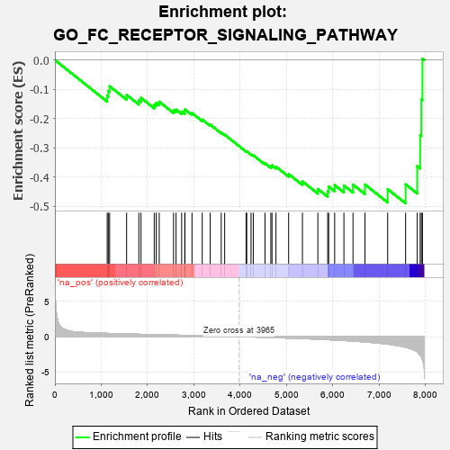
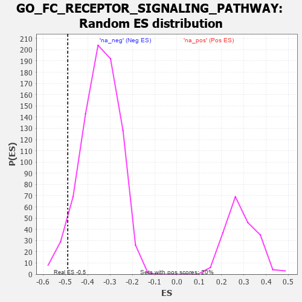

| | | Dataset | 7d |
| Phenotype | NoPhenotypeAvailable |
| Upregulated in class | na_neg |
| GeneSet | GO_FC_RECEPTOR_SIGNALING_PATHWAY |
| Enrichment Score (ES) | -0.48985514 |
| Normalized Enrichment Score (NES) | -1.4200321 |
| Nominal p-value | 0.0525 |
| FDR q-value | 0.2921557 |
| FWER p-Value | 1.0 |
Table: GSEA Results Summary

Fig 1: Enrichment plot: GO_FC_RECEPTOR_SIGNALING_PATHWAY
Profile of the Running ES Score & Positions of GeneSet Members on the Rank Ordered List
| PROBE | GENE SYMBOL | GENE_TITLE | RANK IN GENE LIST | RANK METRIC SCORE | RUNNING ES | CORE ENRICHMENT | | 1 | SRC | | | 1128 | 0.459 | -0.1223 | No |
| 2 | PSMD7 | | | 1152 | 0.454 | -0.1056 | No |
| 3 | PSMD2 | | | 1181 | 0.450 | -0.0896 | No |
| 4 | SOS1 | | | 1547 | 0.384 | -0.1190 | No |
| 5 | PSMD4 | | | 1811 | 0.335 | -0.1376 | No |
| 6 | PSMD6 | | | 1858 | 0.326 | -0.1292 | No |
| 7 | PSME4 | | | 2143 | 0.285 | -0.1527 | No |
| 8 | SYK | | | 2186 | 0.278 | -0.1459 | No |
| 9 | PSMF1 | | | 2251 | 0.268 | -0.1424 | No |
| 10 | PSMD5 | | | 2560 | 0.218 | -0.1717 | No |
| 11 | VAV3 | | | 2614 | 0.210 | -0.1693 | No |
| 12 | CUL1 | | | 2735 | 0.193 | -0.1761 | No |
| 13 | FER | | | 2803 | 0.183 | -0.1766 | No |
| 14 | BRK1 | | | 2805 | 0.183 | -0.1688 | No |
| 15 | BTK | | | 2958 | 0.156 | -0.1811 | No |
| 16 | PSMD9 | | | 3179 | 0.125 | -0.2035 | No |
| 17 | TAB1 | | | 3351 | 0.097 | -0.2208 | No |
| 18 | MAPK3 | | | 3589 | 0.062 | -0.2480 | No |
| 19 | SKP1 | | | 3663 | 0.049 | -0.2551 | No |
| 20 | ABL1 | | | 4125 | -0.027 | -0.3121 | No |
| 21 | CRK | | | 4139 | -0.031 | -0.3124 | No |
| 22 | ARPC2 | | | 4232 | -0.047 | -0.3219 | No |
| 23 | PSME3 | | | 4280 | -0.056 | -0.3254 | No |
| 24 | PLPP4 | | | 4533 | -0.101 | -0.3528 | No |
| 25 | ARPC3 | | | 4659 | -0.129 | -0.3630 | No |
| 26 | LIMK1 | | | 4684 | -0.136 | -0.3601 | No |
| 27 | PLCG1 | | | 4770 | -0.151 | -0.3643 | No |
| 28 | PDPK1 | | | 5043 | -0.207 | -0.3896 | No |
| 29 | ELMO2 | | | 5341 | -0.283 | -0.4148 | No |
| 30 | PSMD1 | | | 5674 | -0.367 | -0.4407 | No |
| 31 | ARPC4 | | | 5886 | -0.430 | -0.4486 | Yes |
| 32 | DOCK1 | | | 5908 | -0.438 | -0.4323 | Yes |
| 33 | RAC1 | | | 6036 | -0.484 | -0.4273 | Yes |
| 34 | CDC42 | | | 6236 | -0.548 | -0.4286 | Yes |
| 35 | MALT1 | | | 6432 | -0.634 | -0.4257 | Yes |
| 36 | PAK1 | | | 6691 | -0.757 | -0.4254 | Yes |
| 37 | PTPRJ | | | 7180 | -1.054 | -0.4412 | Yes |
| 38 | CALM1 | | | 7567 | -1.499 | -0.4248 | Yes |
| 39 | TRAF6 | | | 7818 | -2.157 | -0.3627 | Yes |
| 40 | FYN | | | 7881 | -2.622 | -0.2568 | Yes |
| 41 | PSMD3 | | | 7907 | -2.887 | -0.1346 | Yes |
| 42 | PSMD8 | | | 7931 | -3.286 | 0.0050 | Yes |
Table: GSEA details [plain text format]

Fig 2: GO_FC_RECEPTOR_SIGNALING_PATHWAY: Random ES distribution
Gene set null distribution of ES for GO_FC_RECEPTOR_SIGNALING_PATHWAY